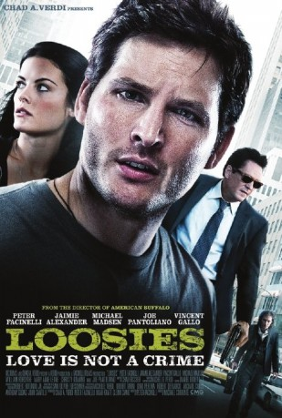

#4355 Loosies - Liebe ist kein Verbrechen
Alternativ: Loosies
 
 IMDB-Wertung: 6.2 / 10
IMDB-Wertung: 6.2 / 10  Metascore: 0
Metascore: 0 
A young pickpocket in the New York subways, living a fast, free, lifestyle is confronted by a woman whom he had a one night affair with, she informs him that she is now pregnant with his child, he must now choose between continuing the lifestyle he lead or take responsibility for his actions.
Jahr: 2011
Dauer: undefiniert Minuten
FSK:
Land: USA Studio: IFC FilmsTonspuren: DTS - ,
Untertitel:
Auflösung: 1080p (1920x1040) Größe: 5478 MB
Genre: Komödie, Krimi, Liebe
Regisseur: Michael Corrente
Drehbuch: Matt Cook
Soundtrack:
Darsteller:
 Peter Facinelli als Bobby Corelli
Peter Facinelli als Bobby Corelli Jaimie Alexander als Lucy Atwood
Jaimie Alexander als Lucy Atwood Michael Madsen als Lt. Nick Sullivan
Michael Madsen als Lt. Nick Sullivan Vincent Gallo als Jax
Vincent Gallo als Jax William Forsythe als Captain Tom Edwards
William Forsythe als Captain Tom Edwards- Marianne Leone als Rita Corelli
 Christy Carlson Romano als Carmen
Christy Carlson Romano als Carmen Joe Pantoliano als Carl
Joe Pantoliano als Carl- Tom DeNucci als Detective Jeffrey
- Tom Paolino als Detective Verdi
- Anthony Paolucci als Officer
- Sera Verdi als Girl in Train Station
- Chad A. Verdi als Father in Train Station / Bar Guy 4
- Rebecca Forsythe als Pretty Girl in Bar
- Billy 'V' Vigeant als Goon #1
- Vic Clay als Subway Commuter , uncredited
- David Gere als Victim in Subway , uncredited
 Ren Knopf als Pedestrian , uncredited
Ren Knopf als Pedestrian , uncredited- Paul Lussier als Commuter , uncredited
 Gary Roscoe als Pedestrian , uncredited
Gary Roscoe als Pedestrian , uncredited Stream als Pedestrian / Loosies Bar Patron , uncredited
Stream als Pedestrian / Loosies Bar Patron , uncredited George J. Vezina als Passerby on Street , uncredited
George J. Vezina als Passerby on Street , uncredited- Alex Ziwak als Subway Commuter , uncredited
- Eric Phillips als Donny
- Ara Boghigian als Officer
- Glenn Ciano als Gomer
- Johnny Cicco als Stoner Adam
- Stella Schnabel als Girl with Fish
- Travis Atwood als Mickey
- Tyler Atwood als Nicky
- Peter Berkrot als Waiter
- Anne Mulhall als Nurse
- Jeannine Light als Subway Patron
- Benny Salerno als Man on Subway
- David Goggin als Policeman / Police Officer
- Barry Blair als Goon #2
- Rob DeFranco als Bar Guy 1
- Robert Tarini als Bar Guy 2
- Michael Tang als Bar Guy 3
- Ray Brooks als Bartender
- Daniel Boneville als Man on Phone
- Sarah Fischer als Clinic Patient , uncredited
- Nicole Petrilli als Lab Receptionist / Subway Commuter , uncredited
Datei: X:\2011(G-M)\Loosies - Liebe ist kein Verbrechen (2011, FSK, 1920x1040).mkv seit 12.09.2016
Festplatte: HD 2011(G-Z)
 Es gibt insgesamt 100 Filme in der Gruppe '2011(G-M)'
Es gibt insgesamt 100 Filme in der Gruppe '2011(G-M)'